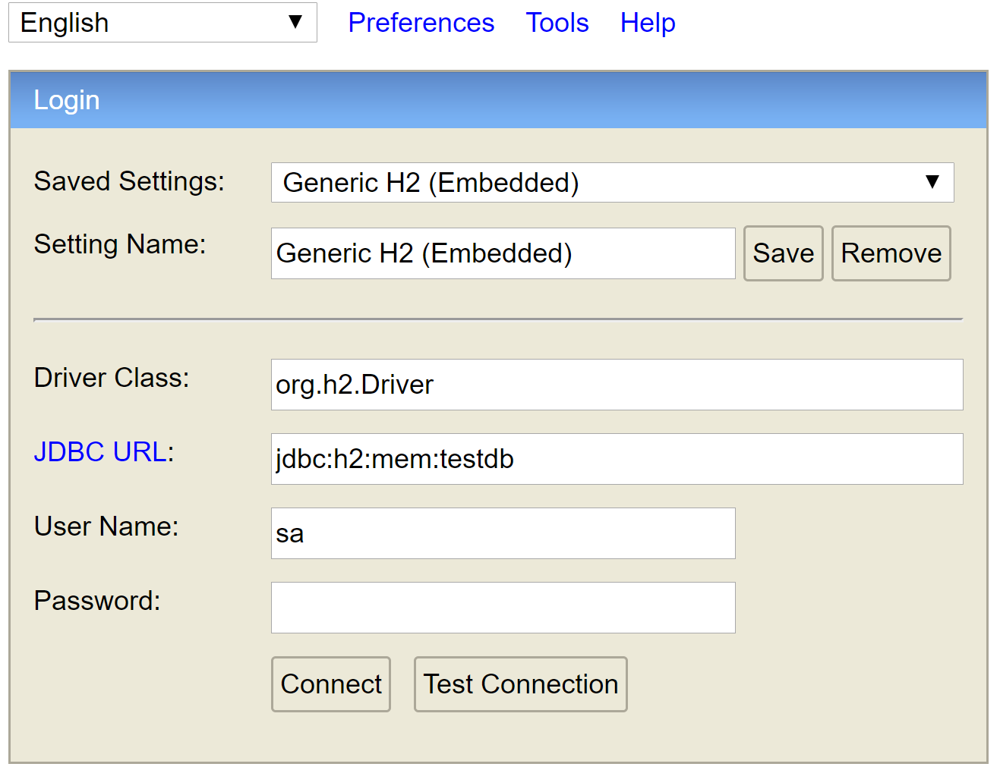
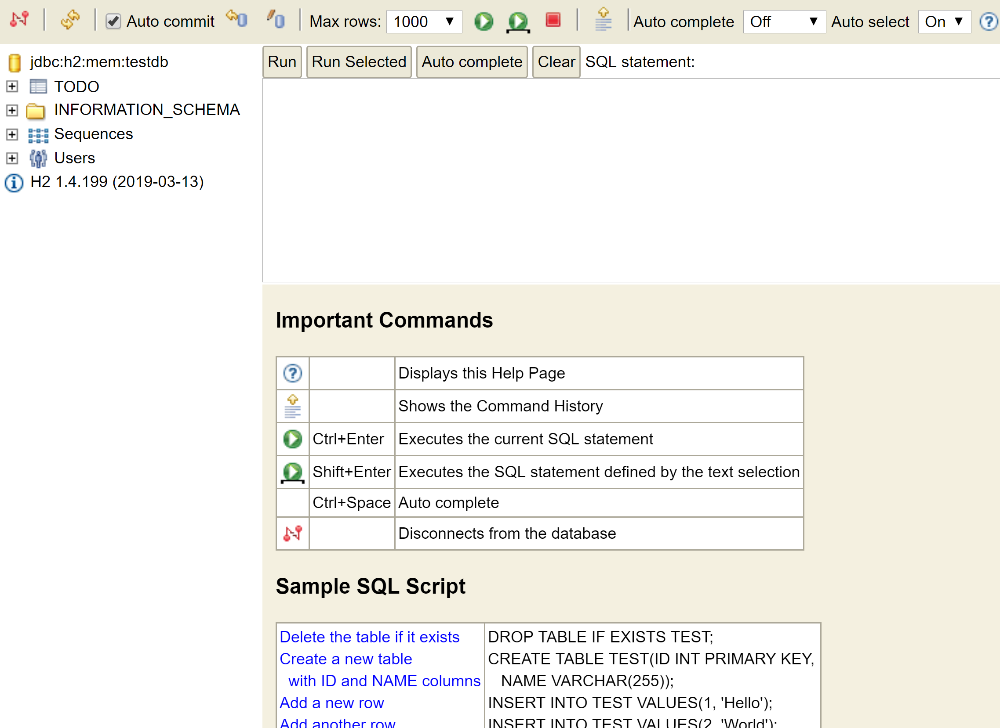
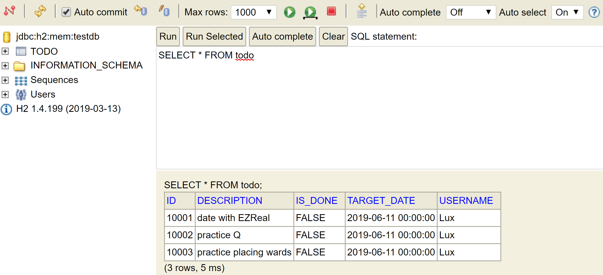

<!DOCTYPE html>
<html>
<head><meta name="generator" content="Hexo 3.8.0">
  <!-- hexo-inject:begin --><!-- hexo-inject:end --><meta charset="utf-8">
  

  
  <title>TODO List Project - JPA and Hibernate | TongTong Shi&#39;s Blog</title>
  <meta name="viewport" content="width=device-width, initial-scale=1, maximum-scale=1">
  <meta name="description" content="previous_step  Connecting Spring Boot RESTful API with JPA and Hibernate The awesome thing with JPA hibernate, spring hibernate, and springboot combination with H2 is the fact that as soon as you crea">
<meta name="keywords" content="Angular,Project,Spring Boot">
<meta property="og:type" content="article">
<meta property="og:title" content="TODO List Project - JPA and Hibernate">
<meta property="og:url" content="http://yoursite.com/2019/06/11/todo-db/index.html">
<meta property="og:site_name" content="TongTong Shi&#39;s Blog">
<meta property="og:description" content="previous_step  Connecting Spring Boot RESTful API with JPA and Hibernate The awesome thing with JPA hibernate, spring hibernate, and springboot combination with H2 is the fact that as soon as you crea">
<meta property="og:locale" content="default">
<meta property="og:image" content="http://yoursite.com/2019/06/11/todo-db/h2Console.png">
<meta property="og:image" content="http://yoursite.com/2019/06/11/todo-db/h2Console2.png">
<meta property="og:image" content="http://yoursite.com/2019/06/11/todo-db/h2Console3.png">
<meta property="og:updated_time" content="2019-06-17T17:38:50.164Z">
<meta name="twitter:card" content="summary">
<meta name="twitter:title" content="TODO List Project - JPA and Hibernate">
<meta name="twitter:description" content="previous_step  Connecting Spring Boot RESTful API with JPA and Hibernate The awesome thing with JPA hibernate, spring hibernate, and springboot combination with H2 is the fact that as soon as you crea">
<meta name="twitter:image" content="http://yoursite.com/2019/06/11/todo-db/h2Console.png">
  
    <link rel="alternate" href="/atom.xml" title="TongTong Shi&#39;s Blog" type="application/atom+xml">
  
  
    <link rel="icon" href="/favicon.png">
  
  
    <link href="//fonts.googleapis.com/css?family=Source+Code+Pro" rel="stylesheet" type="text/css">
  
  <link rel="stylesheet" href="/css/style.css"><!-- hexo-inject:begin --><!-- hexo-inject:end -->
</head>
</html>
<body>
  <!-- hexo-inject:begin --><!-- hexo-inject:end --><div id="container">
    <div id="wrap">
      <header id="header">
  <div id="banner"></div>
  <div id="header-outer" class="outer">
    <div id="header-title" class="inner">
      <h1 id="logo-wrap">
        <a href="/" id="logo">TongTong Shi&#39;s Blog</a>
      </h1>
      
    </div>
    <div id="header-inner" class="inner">
      <nav id="main-nav">
        <a id="main-nav-toggle" class="nav-icon"></a>
        
          <a class="main-nav-link" href="/">Home</a>
        
          <a class="main-nav-link" href="/archives">Archives</a>
        
      </nav>
      <nav id="sub-nav">
        
          <a id="nav-rss-link" class="nav-icon" href="/atom.xml" title="RSS Feed"></a>
        
        <a id="nav-search-btn" class="nav-icon" title="Search"></a>
      </nav>
      <div id="search-form-wrap">
        <form action="//google.com/search" method="get" accept-charset="UTF-8" class="search-form"><input type="search" name="q" class="search-form-input" placeholder="Search"><button type="submit" class="search-form-submit">&#xF002;</button><input type="hidden" name="sitesearch" value="http://yoursite.com"></form>
      </div>
    </div>
  </div>
</header>
      <div class="outer">
        <section id="main"><article id="post-todo-db" class="article article-type-post" itemscope itemprop="blogPost">
  <div class="article-meta">
    <a href="/2019/06/11/todo-db/" class="article-date">
  <time datetime="2019-06-11T17:48:44.000Z" itemprop="datePublished">2019-06-11</time>
</a>
    
  </div>
  <div class="article-inner">
    
    
      <header class="article-header">
        
  
    <h1 class="article-title" itemprop="name">
      TODO List Project - JPA and Hibernate
    </h1>
  

      </header>
    
    <div class="article-entry" itemprop="articleBody">
      
        <a href="/2019/06/11/todo-security-JWT/" title="previous_step">previous_step</a>
<h2 id="connecting-spring-boot-restful-api-with-jpa-and-hibernate"><a class="markdownIt-Anchor" href="#connecting-spring-boot-restful-api-with-jpa-and-hibernate"></a> Connecting Spring Boot RESTful API with JPA and Hibernate</h2>
<p>The awesome thing with JPA hibernate, spring hibernate, and springboot combination with H2 is the fact that as soon as you creae an entity, it would create the database in memory automatically.</p>
<p>In our project, to use <strong>JPA</strong> and <strong>Hibernate</strong> the injected <em>dependency</em> is <code>spring-boot-starter-data-jpa</code> and <code>h2</code>.</p>
<a id="more"></a>
<p><font color="dodgerblue"><strong>1. Setting up Todo Entity and Populating Data</strong></font></p>
<ul>
<li>
<p>Editing the Entity class</p>
<ul>
<li>
<p>Add decorate <code>@Entity</code> above the class <code>Todo</code>. Then <code>Todo</code> would become an entity and would be stored into the database.</p>
</li>
<li>
<p>Indicate primariy key using <code>@Id</code>. Every entity in JPA needs to have a primary key. Another important thing is ID field ideally should be a wrapper class, so we use <code>Long</code> instead of <code>long</code>. It’s not suggested to have a primitive, because typically <code>null</code> indicates that an entity is not yet stored to the database. So what we are doing is we are making this Long.</p>
</li>
<li>
<p>Using <code>@GeneratedValue</code> above id, since we want that id to be automatically increased.</p>
</li>
</ul>
</li>
<li>
<p>In <code>application.properties</code>, add more property related to JPA, hibernate, h2 and spring data jpa.</p>
</li>
</ul>
<figure class="highlight stylus"><figcaption><span>lang: properties</span></figcaption><table><tr><td class="gutter"><pre><span class="line">1</span><br><span class="line">2</span><br></pre></td><td class="code"><pre><span class="line">spring<span class="selector-class">.jpa</span><span class="selector-class">.show-sql</span>=true</span><br><span class="line">spring<span class="selector-class">.h2</span><span class="selector-class">.console</span><span class="selector-class">.enabled</span>=true</span><br></pre></td></tr></table></figure>
<ul>
<li>
<p>Then, start our application and type in <em>URL</em> <code>localhost:8080/h2-console</code>. We can see a console like this, change the JDBC URL to be <code>jdbc:h2:mem:testdb</code> and click Connect buttion.<br>
<br>
Now we can see the db console as follows.<br>
</p>
</li>
<li>
<p>Next, insert several data into the database in spring. Under folder <code>src/main/resources</code>, we create a new file <code>data.sql</code> and writh some sql statements.</p>
</li>
</ul>
<figure class="highlight sql"><figcaption><span>lang: SQL</span></figcaption><table><tr><td class="gutter"><pre><span class="line">1</span><br><span class="line">2</span><br><span class="line">3</span><br><span class="line">4</span><br><span class="line">5</span><br><span class="line">6</span><br><span class="line">7</span><br><span class="line">8</span><br></pre></td><td class="code"><pre><span class="line"><span class="keyword">INSERT</span> <span class="keyword">INTO</span> todo(<span class="keyword">id</span>, username, description, target_date, is_done)</span><br><span class="line"><span class="keyword">VALUES</span> (<span class="number">10001</span>, <span class="string">'Lux'</span>, <span class="string">'date with EZReal'</span>, <span class="keyword">sysdate</span>(), <span class="literal">false</span>);</span><br><span class="line"></span><br><span class="line"><span class="keyword">INSERT</span> <span class="keyword">INTO</span> todo(<span class="keyword">id</span>, username, description, target_date, is_done)</span><br><span class="line"><span class="keyword">VALUES</span> (<span class="number">10002</span>, <span class="string">'Lux'</span>, <span class="string">'practice Q'</span>, <span class="keyword">sysdate</span>(), <span class="literal">false</span>);</span><br><span class="line"></span><br><span class="line"><span class="keyword">INSERT</span> <span class="keyword">INTO</span> todo(<span class="keyword">id</span>, username, description, target_date, is_done)</span><br><span class="line"><span class="keyword">VALUES</span> (<span class="number">10003</span>, <span class="string">'Lux'</span>, <span class="string">'practice placing wards'</span>, <span class="keyword">sysdate</span>(), <span class="literal">false</span>);</span><br></pre></td></tr></table></figure>
<p>After restarting the server, we can see in the <strong>h2-console</strong> the data has been inserted into the <code>todo</code> table.<br>
</p>
<p><font color="dodgerblue"><strong>2. Connecting <em>GET</em> REST APIs to JPA Repository</strong></font></p>
<ul>
<li>Create a class <code>TodoJpaRepository</code>.</li>
</ul>
<figure class="highlight angelscript"><figcaption><span>lang: java</span></figcaption><table><tr><td class="gutter"><pre><span class="line">1</span><br><span class="line">2</span><br></pre></td><td class="code"><pre><span class="line">@Repository</span><br><span class="line"><span class="keyword">public</span> <span class="keyword">interface</span> <span class="symbol">TodoJpaRepository</span> <span class="symbol">extends</span> <span class="symbol">JpaRepository</span>&lt;<span class="symbol">Todo</span>, <span class="symbol">Long</span>&gt;&#123;&#125;</span><br></pre></td></tr></table></figure>
<ul>
<li>Create a class <code>TodoJpaService</code> and edit find todo by id method. Since the return type of method <code>todoRepository.findById(id)</code> is <code>Optional</code>, if we want to return a <code>Todo</code>, we use <code>.get()</code> method.</li>
</ul>
<figure class="highlight less"><figcaption><span>lang: java</span></figcaption><table><tr><td class="gutter"><pre><span class="line">1</span><br><span class="line">2</span><br><span class="line">3</span><br><span class="line">4</span><br><span class="line">5</span><br><span class="line">6</span><br><span class="line">7</span><br><span class="line">8</span><br><span class="line">9</span><br><span class="line">10</span><br></pre></td><td class="code"><pre><span class="line"><span class="selector-tag">public</span> <span class="selector-tag">class</span> <span class="selector-tag">TodoJPAResource</span> &#123;</span><br><span class="line"></span><br><span class="line">  <span class="variable">@Autowired</span></span><br><span class="line">  private TodoJpaRepository todoJpaRepository;</span><br><span class="line"></span><br><span class="line">  <span class="variable">@GetMapping</span>(<span class="string">"/jpa/users/&#123;username&#125;/todos/&#123;id&#125;"</span>)</span><br><span class="line">  public Todo getTodo(<span class="variable">@PathVariable</span> String username, <span class="variable">@PathVariable</span> long id) &#123;</span><br><span class="line">      <span class="selector-tag">return</span> <span class="selector-tag">todoJpaRepository</span><span class="selector-class">.findById</span>(id)<span class="selector-class">.get</span>();</span><br><span class="line">  &#125;</span><br><span class="line">&#125;</span><br></pre></td></tr></table></figure>
<ul>
<li>Find todo list by username method. First, add a method in <code>TodoJpaRepository</code>.</li>
</ul>
<figure class="highlight angelscript"><figcaption><span>lang: java</span></figcaption><table><tr><td class="gutter"><pre><span class="line">1</span><br><span class="line">2</span><br><span class="line">3</span><br><span class="line">4</span><br></pre></td><td class="code"><pre><span class="line">@Repository</span><br><span class="line"><span class="keyword">public</span> <span class="keyword">interface</span> <span class="symbol">TodoJpaRepository</span> <span class="symbol">extends</span> <span class="symbol">JpaRepository</span>&lt;<span class="symbol">Todo</span>, <span class="symbol">Long</span>&gt;&#123;</span><br><span class="line">    List&lt;Todo&gt; findByUsername(String username);</span><br><span class="line">&#125;</span><br></pre></td></tr></table></figure>
<figure class="highlight less"><figcaption><span>lang: java</span></figcaption><table><tr><td class="gutter"><pre><span class="line">1</span><br><span class="line">2</span><br><span class="line">3</span><br><span class="line">4</span><br></pre></td><td class="code"><pre><span class="line"><span class="variable">@GetMapping</span>(<span class="string">"/jpa/users/&#123;username&#125;/todos"</span>)</span><br><span class="line">public List&lt;Todo&gt; getAllTodos(<span class="variable">@PathVariable</span> String username) &#123;</span><br><span class="line">  <span class="selector-tag">return</span> <span class="selector-tag">todoJpaRepository</span><span class="selector-class">.findByUsername</span>(username);</span><br><span class="line">&#125;</span><br></pre></td></tr></table></figure>
<ul>
<li>Change the <em>URL</em> in the frontend, we can add a new <em>URL</em> in <code>app.constans.ts</code>. That is <code>export const TODO_JAP_API_URL = &quot;http://localhost:8080/jpa&quot;</code>.</li>
</ul>
<p><font color="dodgerblue"><strong>3. Connecting <em>POST</em>, <em>PUT</em> and <em>DELETE</em> REST APIs to JPA Repository</strong></font></p>
<ul>
<li>Code backend. Note that when creating a new todo, we need to set username.</li>
</ul>
<details>
<summary>CLICK</summary>
<figure class="highlight reasonml"><figcaption><span>lang: java</span></figcaption><table><tr><td class="gutter"><pre><span class="line">1</span><br><span class="line">2</span><br><span class="line">3</span><br><span class="line">4</span><br><span class="line">5</span><br><span class="line">6</span><br><span class="line">7</span><br><span class="line">8</span><br><span class="line">9</span><br><span class="line">10</span><br><span class="line">11</span><br><span class="line">12</span><br><span class="line">13</span><br><span class="line">14</span><br><span class="line">15</span><br><span class="line">16</span><br><span class="line">17</span><br><span class="line">18</span><br><span class="line">19</span><br><span class="line">20</span><br><span class="line">21</span><br><span class="line">22</span><br><span class="line">23</span><br><span class="line">24</span><br><span class="line">25</span><br><span class="line">26</span><br><span class="line">27</span><br><span class="line">28</span><br></pre></td><td class="code"><pre><span class="line">@<span class="constructor">DeleteMapping(<span class="string">"/jpa/users/&#123;username&#125;/todos/&#123;id&#125;"</span>)</span></span><br><span class="line">public ResponseEntity&lt;Void&gt; deleteTodo (@PathVariable String username, @PathVariable long id) &#123;</span><br><span class="line"></span><br><span class="line">  todoJpaRepository.delete<span class="constructor">ById(<span class="params">id</span>)</span>;</span><br><span class="line"></span><br><span class="line">  return <span class="module-access"><span class="module"><span class="identifier">ResponseEntity</span>.</span></span>no<span class="constructor">Content()</span>.build<span class="literal">()</span>;</span><br><span class="line">&#125;</span><br><span class="line"></span><br><span class="line">@<span class="constructor">PutMapping(<span class="string">"/jpa/users/&#123;username&#125;/todos/&#123;id&#125;"</span>)</span></span><br><span class="line">public ResponseEntity&lt;Todo&gt; update<span class="constructor">Todo(@PathVariable String <span class="params">username</span>, @PathVariable <span class="params">long</span> <span class="params">id</span>, @RequestBody Todo <span class="params">todo</span>)</span> &#123;</span><br><span class="line"></span><br><span class="line">  Todo todoUpdated = todoJpaRepository.save(todo);</span><br><span class="line"></span><br><span class="line">  return <span class="keyword">new</span> ResponseEntity&lt;Todo&gt;(todo, HttpStatus.OK);</span><br><span class="line">&#125;</span><br><span class="line"></span><br><span class="line">@<span class="constructor">PostMapping(<span class="string">"/jpa/users/&#123;username&#125;/todos"</span>)</span></span><br><span class="line">public ResponseEntity&lt;Void&gt; create<span class="constructor">Todo(@PathVariable String <span class="params">username</span>, @RequestBody Todo <span class="params">todo</span>)</span> &#123;</span><br><span class="line"></span><br><span class="line">  todo.set<span class="constructor">Username(<span class="params">username</span>)</span>;</span><br><span class="line">  Todo createdTodo = todoJpaRepository.save(todo);</span><br><span class="line"></span><br><span class="line">  <span class="comment">//Location</span></span><br><span class="line">  <span class="comment">//Get current resource url</span></span><br><span class="line">  URI uri = <span class="module-access"><span class="module"><span class="identifier">ServletUriComponentsBuilder</span>.</span></span>from<span class="constructor">CurrentRequest()</span>.path(<span class="string">"/&#123;id&#125;"</span>).build<span class="constructor">AndExpand(<span class="params">createdTodo</span>.<span class="params">getId</span>()</span>).<span class="keyword">to</span><span class="constructor">Uri()</span>;</span><br><span class="line"></span><br><span class="line">  return <span class="module-access"><span class="module"><span class="identifier">ResponseEntity</span>.</span></span>created(uri).build<span class="literal">()</span>;</span><br><span class="line">&#125;</span><br></pre></td></tr></table></figure>
</details>
<ul>
<li>Change <em>URL</em> in frontend.</li>
</ul>

      
    </div>
    <footer class="article-footer">
      <a data-url="http://yoursite.com/2019/06/11/todo-db/" data-id="cjzbp0nul00sqlsven2ju9s9i" class="article-share-link">Share</a>
      
      
  <ul class="article-tag-list"><li class="article-tag-list-item"><a class="article-tag-list-link" href="/tags/Angular/">Angular</a></li><li class="article-tag-list-item"><a class="article-tag-list-link" href="/tags/Project/">Project</a></li><li class="article-tag-list-item"><a class="article-tag-list-link" href="/tags/Spring-Boot/">Spring Boot</a></li></ul>

    </footer>
  </div>
  
    
<nav id="article-nav">
  
    <a href="/2019/06/12/springboot-introduction/" id="article-nav-newer" class="article-nav-link-wrap">
      <strong class="article-nav-caption">Newer</strong>
      <div class="article-nav-title">
        
          Spring Boot Introduction
        
      </div>
    </a>
  
  
    <a href="/2019/06/11/todo-security-JWT/" id="article-nav-older" class="article-nav-link-wrap">
      <strong class="article-nav-caption">Older</strong>
      <div class="article-nav-title">TODO List Project - JWT</div>
    </a>
  
</nav>

  
</article>

</section>
        
          <aside id="sidebar">
  
    
  <div class="widget-wrap">
    <h3 class="widget-title">Tag Cloud</h3>
    <div class="widget tagcloud">
      <a href="/tags/Angular/" style="font-size: 15.42px;">Angular</a> <a href="/tags/Array/" style="font-size: 17.5px;">Array</a> <a href="/tags/BFS/" style="font-size: 16.67px;">BFS</a> <a href="/tags/BST/" style="font-size: 12.5px;">BST</a> <a href="/tags/Backtracking/" style="font-size: 16.25px;">Backtracking</a> <a href="/tags/Binary-Search/" style="font-size: 15.83px;">Binary Search</a> <a href="/tags/Binary-Search-Tree/" style="font-size: 10.42px;">Binary Search Tree</a> <a href="/tags/Bucket-Sort/" style="font-size: 10.83px;">Bucket Sort</a> <a href="/tags/Cantor-Unfold/" style="font-size: 10px;">Cantor Unfold</a> <a href="/tags/Cat1-Cat1-1/" style="font-size: 10px;">Cat1,Cat1.1</a> <a href="/tags/Cat2/" style="font-size: 10px;">Cat2</a> <a href="/tags/Cat3/" style="font-size: 10px;">Cat3</a> <a href="/tags/Combination/" style="font-size: 12.92px;">Combination</a> <a href="/tags/Counting-Sort/" style="font-size: 10.83px;">Counting Sort</a> <a href="/tags/DFS/" style="font-size: 17.92px;">DFS</a> <a href="/tags/DP/" style="font-size: 19.58px;">DP</a> <a href="/tags/Data-Structure/" style="font-size: 10px;">Data Structure</a> <a href="/tags/Database/" style="font-size: 11.25px;">Database</a> <a href="/tags/Design/" style="font-size: 15.42px;">Design</a> <a href="/tags/Design-Pattern/" style="font-size: 10.83px;">Design Pattern</a> <a href="/tags/Disjoint-Set/" style="font-size: 14.17px;">Disjoint Set</a> <a href="/tags/Divide-and-Conquer/" style="font-size: 10px;">Divide and Conquer</a> <a href="/tags/Graph/" style="font-size: 10px;">Graph</a> <a href="/tags/Greedy/" style="font-size: 18.75px;">Greedy</a> <a href="/tags/HashTable/" style="font-size: 18.33px;">HashTable</a> <a href="/tags/Heap/" style="font-size: 12.92px;">Heap</a> <a href="/tags/Integer-Overflow/" style="font-size: 10.42px;">Integer Overflow</a> <a href="/tags/Java-Baisc/" style="font-size: 10px;">Java Baisc</a> <a href="/tags/Java-Basic/" style="font-size: 11.67px;">Java Basic</a> <a href="/tags/KMP/" style="font-size: 10px;">KMP</a> <a href="/tags/KMP-algorithm/" style="font-size: 10px;">KMP algorithm</a> <a href="/tags/LeetCode/" style="font-size: 20px;">LeetCode</a> <a href="/tags/Linked-List/" style="font-size: 11.25px;">Linked List</a> <a href="/tags/LinkedList/" style="font-size: 10.83px;">LinkedList</a> <a href="/tags/LintCode/" style="font-size: 16.25px;">LintCode</a> <a href="/tags/Math/" style="font-size: 19.17px;">Math</a> <a href="/tags/Memorization/" style="font-size: 11.67px;">Memorization</a> <a href="/tags/Merge-Sort/" style="font-size: 10px;">Merge Sort</a> <a href="/tags/Monotonous-Stack/" style="font-size: 14.17px;">Monotonous Stack</a> <a href="/tags/Multiplication/" style="font-size: 10.42px;">Multiplication</a> <a href="/tags/MyBatis/" style="font-size: 12.5px;">MyBatis</a> <a href="/tags/MySQL/" style="font-size: 10.42px;">MySQL</a> <a href="/tags/Number-Theoretic-Algorithm/" style="font-size: 10px;">Number-Theoretic Algorithm</a> <a href="/tags/OOD/" style="font-size: 10px;">OOD</a> <a href="/tags/Partition/" style="font-size: 11.25px;">Partition</a> <a href="/tags/Permutation/" style="font-size: 10.83px;">Permutation</a> <a href="/tags/Project/" style="font-size: 15px;">Project</a> <a href="/tags/PropertyPlaceholderConfigurer/" style="font-size: 10px;">PropertyPlaceholderConfigurer</a> <a href="/tags/Queue/" style="font-size: 10px;">Queue</a> <a href="/tags/Quick-Select/" style="font-size: 10px;">Quick Select</a> <a href="/tags/Recursion/" style="font-size: 12.08px;">Recursion</a> <a href="/tags/Recurtion/" style="font-size: 10px;">Recurtion</a> <a href="/tags/Reflection/" style="font-size: 10px;">Reflection</a> <a href="/tags/SQL/" style="font-size: 10.42px;">SQL</a> <a href="/tags/SSM/" style="font-size: 12.08px;">SSM</a> <a href="/tags/Sliding-Window/" style="font-size: 13.75px;">Sliding Window</a> <a href="/tags/Sort/" style="font-size: 13.33px;">Sort</a> <a href="/tags/Spring/" style="font-size: 12.5px;">Spring</a> <a href="/tags/Spring-Boot/" style="font-size: 12.92px;">Spring Boot</a> <a href="/tags/Spring-Security/" style="font-size: 10.42px;">Spring Security</a> <a href="/tags/SpringMVC/" style="font-size: 12.08px;">SpringMVC</a> <a href="/tags/Stack/" style="font-size: 17.08px;">Stack</a> <a href="/tags/String/" style="font-size: 16.25px;">String</a> <a href="/tags/Sweep-Line/" style="font-size: 10.42px;">Sweep Line</a> <a href="/tags/Thread/" style="font-size: 11.67px;">Thread</a> <a href="/tags/Top-Interview-Qs/" style="font-size: 11.25px;">Top Interview Qs</a> <a href="/tags/Topology-Sorting/" style="font-size: 11.67px;">Topology Sorting</a> <a href="/tags/Tree/" style="font-size: 18.75px;">Tree</a> <a href="/tags/Trie/" style="font-size: 11.25px;">Trie</a> <a href="/tags/Two-Pointers/" style="font-size: 16.25px;">Two Pointers</a> <a href="/tags/Union-Find/" style="font-size: 14.58px;">Union Find</a> <a href="/tags/backtracking/" style="font-size: 10.42px;">backtracking</a> <a href="/tags/gcd/" style="font-size: 10px;">gcd</a>
    </div>
  </div>

  
    
  <div class="widget-wrap">
    <h3 class="widget-title">Archives</h3>
    <div class="widget">
      <ul class="archive-list"><li class="archive-list-item"><a class="archive-list-link" href="/archives/2019/08/">August 2019</a></li><li class="archive-list-item"><a class="archive-list-link" href="/archives/2019/07/">July 2019</a></li><li class="archive-list-item"><a class="archive-list-link" href="/archives/2019/06/">June 2019</a></li><li class="archive-list-item"><a class="archive-list-link" href="/archives/2019/05/">May 2019</a></li><li class="archive-list-item"><a class="archive-list-link" href="/archives/2019/04/">April 2019</a></li></ul>
    </div>
  </div>


  
    
  <div class="widget-wrap">
    <h3 class="widget-title">Recent Posts</h3>
    <div class="widget">
      <ul>
        
          <li>
            <a href="/2019/08/14/sql-notes-3/">Study Notes - SQL &amp; MySQL &amp; MyBatis (2)</a>
          </li>
        
          <li>
            <a href="/2019/08/12/sql-nodes-2/">Study Notes - SQL &amp; MySQL &amp; MyBatis (1)</a>
          </li>
        
          <li>
            <a href="/2019/08/12/sql-notes-1/">Study Notes - SQL &amp; MySQL &amp; MyBatis</a>
          </li>
        
          <li>
            <a href="/2019/08/09/leetcodeQ1131/">Maximum of Absolute Value Expression</a>
          </li>
        
          <li>
            <a href="/2019/08/09/leetcodeQ108/">Convert Sorted Array to Binary Search Tree</a>
          </li>
        
      </ul>
    </div>
  </div>

  
</aside>
        
      </div>
      <footer id="footer">
  
  <div class="outer">
    <span id="footer-info" class="inner">
      &copy; 2019 Tong Shi<br>
      Powered by <a href="http://hexo.io/" target="_blank">Hexo</a>
    </span>
  </div>
  <div id="analysis" style="text-align:center;">
  <span id="busuanzi_container_site_uv">Total visitors: <span id="busuanzi_value_site_uv"></span>persion-time</span>
	<span id="busuanzi_container_site_pv">
      Total visits: <span id="busuanzi_value_site_pv"></span> times</span>
  </div>
</footer>

<script async src="//busuanzi.ibruce.info/busuanzi/2.3/busuanzi.pure.mini.js">
</script>
    </div>
    <nav id="mobile-nav">
  
    <a href="/" class="mobile-nav-link">Home</a>
  
    <a href="/archives" class="mobile-nav-link">Archives</a>
  
</nav>
    

<script src="//ajax.googleapis.com/ajax/libs/jquery/2.0.3/jquery.min.js"></script>


  <link rel="stylesheet" href="/fancybox/jquery.fancybox.css">
  <script src="/fancybox/jquery.fancybox.pack.js"></script>


<script src="/js/script.js"></script>


  </div>
<script type="text/x-mathjax-config">
    MathJax.Hub.Config({
        tex2jax: {
            inlineMath: [ ["$","$"], ["\\(","\\)"] ],
            skipTags: ['script', 'noscript', 'style', 'textarea', 'pre', 'code'],
            processEscapes: true
        }
    });
    MathJax.Hub.Queue(function() {
        var all = MathJax.Hub.getAllJax();
        for (var i = 0; i < all.length; ++i)
            all[i].SourceElement().parentNode.className += ' has-jax';
    });
</script>
<script src="http://cdn.mathjax.org/mathjax/latest/MathJax.js?config=TeX-AMS-MML_HTMLorMML"></script><!-- hexo-inject:begin --><!-- Begin: Injected MathJax -->
<script type="text/x-mathjax-config">
  MathJax.Hub.Config("");
</script>

<script type="text/x-mathjax-config">
  MathJax.Hub.Queue(function() {
    var all = MathJax.Hub.getAllJax(), i;
    for(i=0; i < all.length; i += 1) {
      all[i].SourceElement().parentNode.className += ' has-jax';
    }
  });
</script>

<script type="text/javascript" src="//cdn.mathjax.org/mathjax/latest/MathJax.js?config=TeX-AMS-MML_HTMLorMML">
</script>
<!-- End: Injected MathJax -->
<!-- hexo-inject:end -->
</body>
</html>